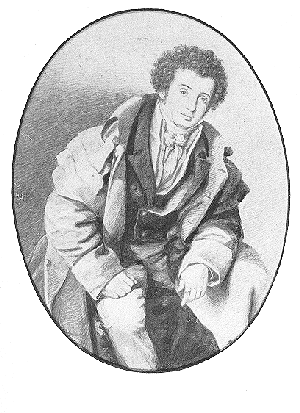

|
Byronmania E-Journal
Publishing the Byronmania E-Journal
was a diversion I enjoyed
but which took up more of my time
than I can now aford to spare.
Maybe, someday, it will be published again.
Until then, please enjoy the existing issues.
***
Anne Ridsdale Mott, B
Ed., M Ed.
Douglas College, New Westminster, B.C. Canada
byronmania [at] shaw [dot] ca
Issues Available Online:
This electronic journal was created as an environment
in which
Byron-Maniacs
could publish their thoughts.
It was a place for more extended writing
than a chat group could accomodate.
A place for speculation
conversation
adoration .
You didn't have to be famous, respected, academic,
or even old.
You just had to have something to say
and be able to say it.
Anything.
That is, anything about
the people, places, politics, religions,
scrapes, japes and poesies
associated with
The Right Honourable
George Gordon Lord Byron,
6th Baron Byron;

the real, original, Regency Romantic hero,
in boots, tight pants and many caped coat,
bi-sexual athlete,
revolutionary,
philosopher,
poet .
Born deformed,
victim of child abuse,
hounded by the press
ostracised
because of rumours of
sexual deviations and irreligion,
abandoned by his wife,
advocate of paederasty,
source of the Vampyre.
Back To
TABLE OF CONTENTS
(academic resources)
Back To
BYRONMANIA.COM
|